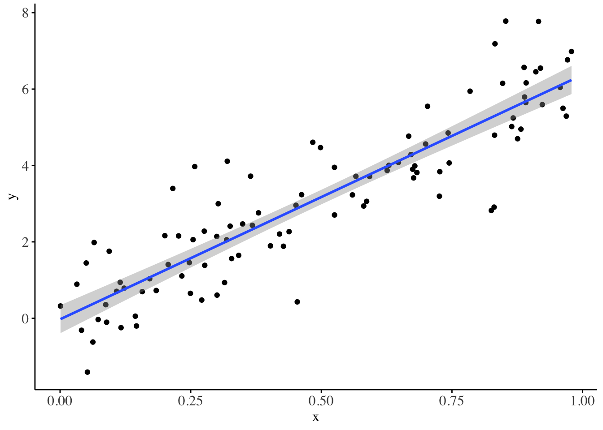
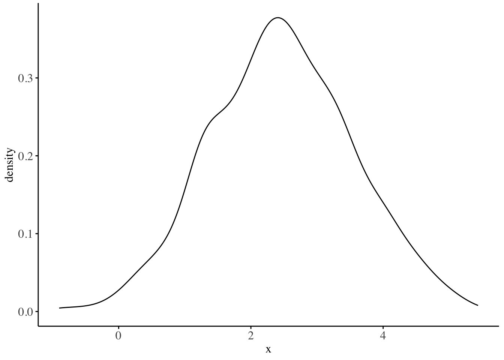
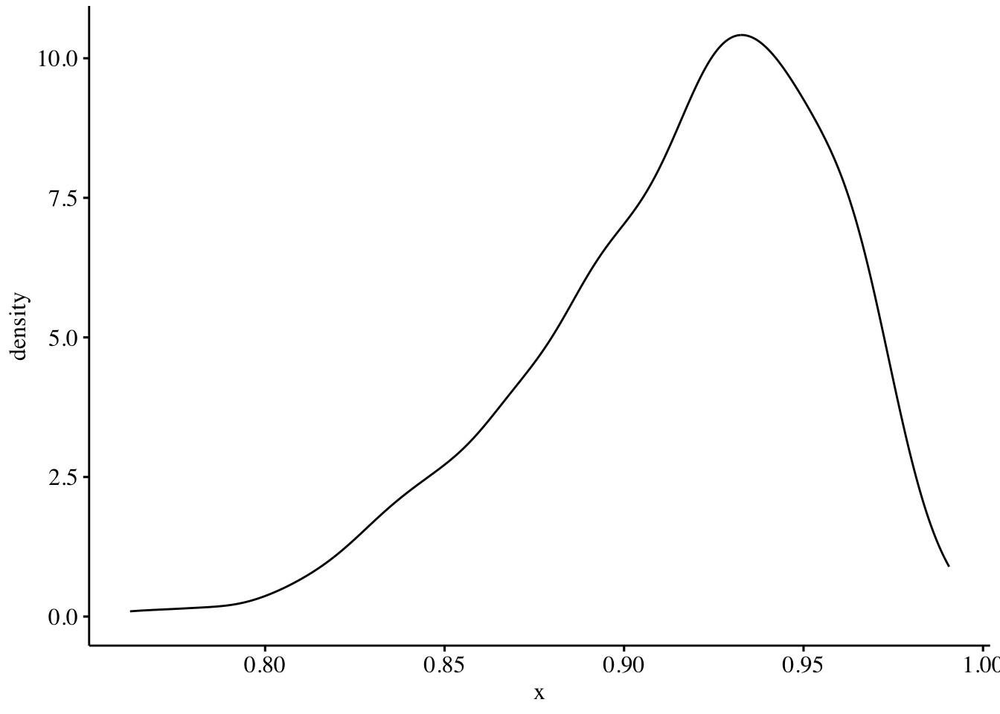

Image taken from: Pietro Ravani, Patrick Parfrey, Sean Murphy, Veeresh Gadag, Brendan Barrett, Clinical research of kidney diseases IV: standard regression models, Nephrology Dialysis Transplantation, Volume 23, Issue 2, February 2008, Pages 475–482, https://doi.org/10.1093/ndt/gfm880
Introduction
If you are reading this, you are likely already acquainted with the simple linear regression model and its extension, the multiple linear regression model. If not, I recommend familiarizing yourself with these foundational concepts before proceeding.

Figure 1: Simple linear regression model fitted on the dataset: D: X ~ N(0, 1), Y ~ N(2 + 3*X, 1)
Generalized Linear Models (GLMs) represent a valuable extension of the linear model framework, particularly when the response variable of interest follows a non-Gaussian distribution. Recall that in Ordinary Least Squares (OLS) regression, a crucial assumption is that the model’s error terms (and by extension, the response variable) are normally distributed. This assumption is instrumental when conducting statistical inference on the estimated coefficients, such as constructing confidence intervals and performing hypothesis tests. An important question for analysts to consider is: how do we proceed when the response distribution deviates from normality?
Such non-Gaussian distributions frequently emerge in practice when dealing with diverse data. For instance:
The exponential distribution often arises when analyzing waiting times and time-until-event scenarios in survival modeling.
Bernoulli and binomial distributions are prevalent in experiments with single or multiple trials where the occurrence of an event is considered a success (e.g., the number of seropositive samples out of total tested samples).
Poisson and negative binomial distributions commonly appear in contexts where counts are the variable of interest, such as disease rates or mortality rates.
Broadly, all GLMs have the following form:
The reponse variable has a clearly defined distribution, which is often fro the exponential family of distributions such as the gaussian, binomial, poisson, etc.
There is a linear predictor of the form: \(\eta = X\beta\), where \(X\) is the matrix of predictor (independent) variables, and \(\beta\) is the vector of regression coefficients (the unknowns we are interested in).
There exists a link function \(g(\cdot)\) that connects \(\mu\) (the expected value of \(Y\)) to the linear predictor, as follows: \(\eta = g(\mu)\). Here: \(\mu = E(Y|X)\). The link function is sufficient to use if it ensures that the transformed linear predictor \((X\beta)\) will correctly map to the range of the mean of the response variable.1.
1 See wikipedia for a table on canonical link functions for common response distributions: https://en.wikipedia.org/wiki/Generalized_linear_model
In this article, we will use an identity link function for gaussian models, the logit(expit) link function for binomial response models, and the log(exp) link function for the poisson and exponential response models.
The conditional mean of the response(dependent) variable \(Y\) depends on the independent variables via:
\[E(Y | X) = \mu = g^{-1}(X\beta)\]
Since: \(\eta = g(\mu)\), then the inverse becomes: \(\mu = g^{-1}(\eta)\)
In this article, I delve into the derivation of GLMs, using a first-principles approach rooted in likelihood theory. It may be beneficial to refresh your understanding of likelihood concepts before proceeding further.
While most sources will emphasize approaching GLMs from an exponential family models approach; here, we will use simple likelihood functions of the assumed response distributions to estimate the parameters of the models given data. Simulated datasets will be used for the purpose of illustration. All analysis will rely on the optim function from R package stats2 for numerical optimization.
2 R Core Team (2023). R: A Language and Environment for Statistical Computing. R Foundation for Statistical Computing, Vienna, Austria.https://www.R-project.org/.
Continuous data: the gaussian distribution
We start with an illustration for the gaussian distribution. Recall: the probability density function of the gaussian distribution with mean \(\mu\) and variance \(\sigma^2\) is written as:
\[f(x|\mu,\sigma^2) = \frac{1}{\sigma\sqrt{2\pi}} e^{-\frac{1}{2}\left(\frac{x-\mu}{\sigma}\right)^2}\] Given a random sample from \(y\) of independent and identically distributed values3\((y_1, ..., y_n)\) the likelihood function is given by:
3 The i.i.d assumption is useful as it greatly simplifies computations using likelihoods i.e. joint probabilities become products over marginals
Expanding the product, and simplifying gives: \[L(\mu, \sigma^2 | y) = \left(\frac{1}{\sigma\sqrt{2\pi}}\right)^n \prod_{i=1}^n e^{-\frac{1}{2}\left(\frac{y_i-\mu}{\sigma}\right)^2} \propto \prod_{i=1}^n e^{-\frac{1}{2}\left(\frac{y_i-\mu}{\sigma}\right)^2} \]
The \(\left(\frac{1}{\sigma\sqrt{2\pi}}\right)^n\) term does not depend on \(\mu\), so we can treat it as a constant.
We can further simplify by taking the logarithm (which is monotonic and doesn’t change the location of the maximum):
\[\log L(\mu | y, \sigma^2) \propto -\frac{1}{2\sigma^2} \sum_{i=1}^n (y_i-\mu)^2 \propto -\sum_{i=1}^n (y_i-\mu)^2\] The above equation gives us the log-likelihood.4 We can either proceed by maximizing the above log-likelihood, or equivalently minimize the negative log-likelihood(MSE in this case). As optim by default handles minimization problems, we therefore proceed (here and in every other part) with minimizing the negative log-likelihood.
4 A keen analyst will realize this is equivalent to the negative mean squared error.
The Negative log-likelihood is: \(\sum_{i=1}^n (y_i-\mu)^2\)

The density of the simulated (Y) gaussian random variable
The implementation is as follows:
# Generating the dataset.seed(123)xmat <-cbind(rep(1, 1000), matrix(runif(5000, min = .2, max = .7), nrow =1000))truepars <-matrix(c(.1, .2, .3, .9, .9, 3), nrow=6)eta <- xmat %*% trueparsy <- eta +rnorm(1000, mean =0, sd =1)# The negative log-likelihoodnll_gaussian <-function(par, ...) { par <-matrix(par, ncol =1) mu <- xmat %*% parsum((y - mu)**2)}# actual optimization: mminimizing the NLL and finding the best parsbetas <-optim(par =rep(1, 6),fn = nll_gaussian,method ="Nelder-Mead",control =list(maxit =1e3),xmat = xmat,y = y)data.frame(actual_beta = (truepars),optim_beta = (betas$par |>round(2)))
The poisson distribution is the most commonly used distribution for modelling frequency of occurence of events or counts. In insurance, it is commonly used in modelling the claim frequency for a portfolio of insurance policies, while in epidemiology, it is a useful starting point for modelling disease occurences.
For a given random variable \(Y\), the probability mass function for a poisson distribution with mean \(\lambda\) is written as:
The bernoulli and binomial distribution are widely used for modeling binary outcomes or proportions. It’s particularly useful in scenarios where we’re interested in the number of successes in a fixed number of independent trials5. Some common applications include: modeling the number of patients responding to a treatment out of the total number treated.
5 For a single trial, the bernoulli distribution is used, while for multiple trials, the binomial distribution is used
For a given random variable \(Y\), representing the number of successes in \(n\) trials, the probability mass function for a binomial distribution with probability of success \(p\) is written as:
\[f(y|n,p) = \binom{n}{y} p^y (1-p)^{n-y}\]
Given a random sample of independent and identically distributed values \((y_1, ..., y_m)\), where each \(y_i\) represents the number of successes in \(n_i\) trials, the likelihood function is given by:
The above equation gives us the log-likelihood. We proceed with minimizing the negative log-likelihood as in the gaussian and poisson case.
The Negative log-likelihood is: \(-\sum_{i=1}^m y_i \log(p) - \sum_{i=1}^m (n_i-y_i) \log(1-p)\)

The density of the proportions (P) of successes out of the N trials.
This formulation allows for varying numbers of trials across observations, which is common in real-world scenarios. If all observations have the same number of trials, you can simplify by replacing \(n_i\) with a constant \(n\).
The code implementation is as follows:
# Generating the dataset.seed(123)xmat <-cbind(rep(1, 1000), matrix(runif(5000, min = .2, max = .7), nrow =1000))truepars <-matrix(c(.1, .2, .3, .9, .9, 3), nrow =6)probs <-plogis(xmat %*% truepars)n <-sample(100:200, 1000, replace =TRUE)y <-cbind(n, rbinom(1000, size = n, prob = probs))# y here is : a matrix of (trials, successes)# The negative log-likelihoodnll_binomial <-function(par, ...) { par <-matrix(par, ncol =1)# Using the logistic function to get probabilities p <-plogis(xmat %*% par) nll <--sum(y[, 2] *log(p) + (y[, 1] - y[, 2]) *log(1- p))return(nll)}# actual optimization: minimizing the NLL and finding the best parsbetas <-optim(par =rep(0, 6),fn = nll_binomial,method ="Nelder-Mead",control =list(maxit =1e3),xmat = xmat,y = y)data.frame(actual_beta = (truepars),optim_beta = (betas$par |>round(2)))
The exponential distribution is fundamental in modeling time-to-event data, particularly in parametric survival analysis. It’s often used as a starting point in survival modelling due to its simplicity and the constant hazard rate assumption. Common applications include: modeling patient survival times or time until disease recurrence and predicting customer churn or time between purchases.
For a given random variable \(Y\) representing time-to-event, the probability density function for an exponential distribution with scale parameter \(\lambda\) (which represents the mean time to event) is written as:
In this article, we’ve explored Generalized Linear Models (GLMs) from a first-principles perspective, focusing on likelihood-based derivations for several common response distributions: Gaussian, Poisson, Binomial, and Exponential. By approaching GLMs through direct likelihood functions rather than the traditional exponential family framework, we’ve provided an alternative, intuitive understanding of these models. This approach not only deepens our understanding of GLMs but also bridges the gap between statistical theory and practical application.
While this likelihood-based method offers valuable insights, it’s important to note that the exponential family approach to GLMs provides additional theoretical advantages, particularly in unifying the treatment of different distributions. Analysts should be familiar with both perspectives.
I will attempt to cover the exponential family approach in a second article.